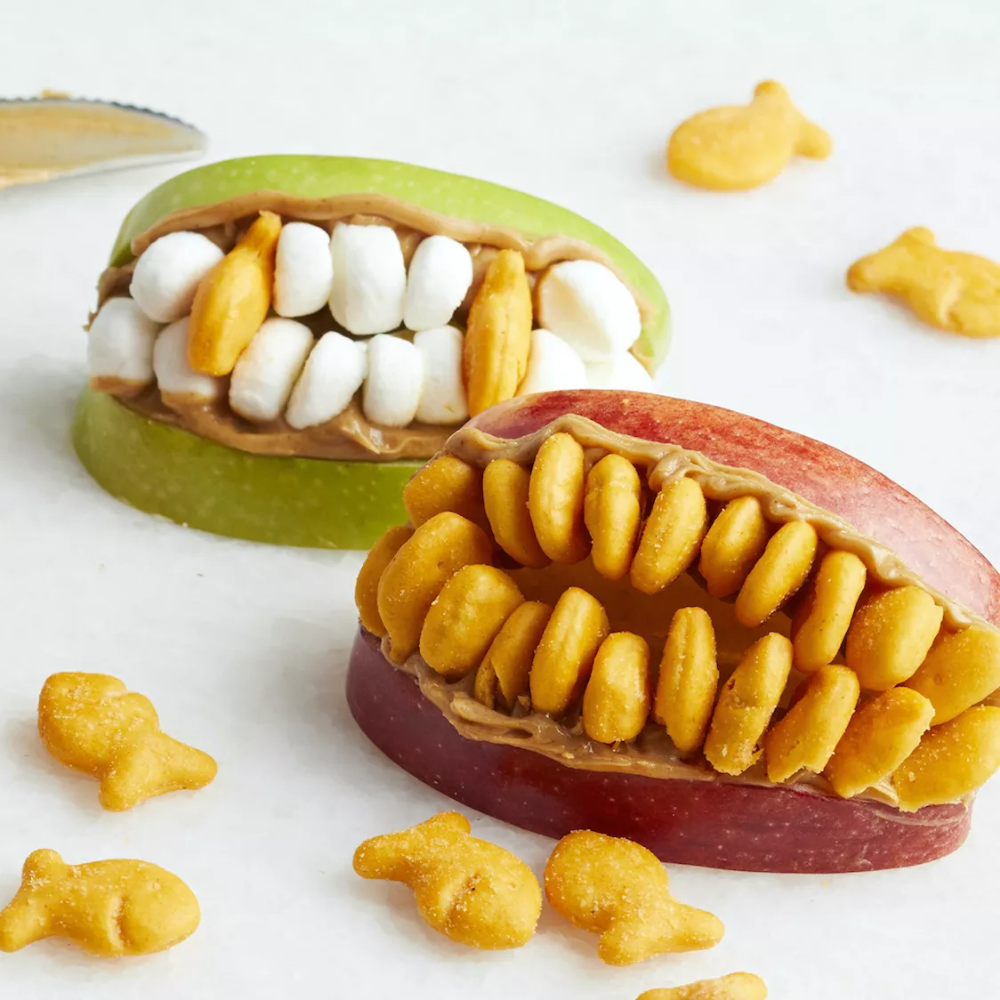

Zombie Lips

Table of Contents
Description
Use Goldfish crackers, marshmallows, or slivered almonds to create a treat that's simply to die for.
Make these fun Halloween snacks with just three ingredients: apple, peanut butter, and cheesy fish crackers!
Time & Servings
15 minutes & 4 servings
Ingredients
- 1 medium apple
- ½ cup peanut butter
- ½ cup miniature fish-shaped crackers (such as Goldfish®), or as needed
Steps
- Core apple and cut into 8 slices. Spread 1 tablespoon peanut butter on 1 side of an apple slice. Press fish crackers tail-first into peanut butter to form teeth. Repeat with another apple slice and gently put on top of first slice to form a mouth. Repeat with remaining apple slices.
Nutrition Facts
- Calories: 338
- Carbs: 29g
- Fat: 21g
- Protein: 11g
DISCLAIMER:
I am in no way the creator of said recipe that is on this page - this is just a fun project. Thank you to Ashlee Marie Prisbrey for the recipe!
For more recipes, please click this link to refer back to the main page that holds all recipes!